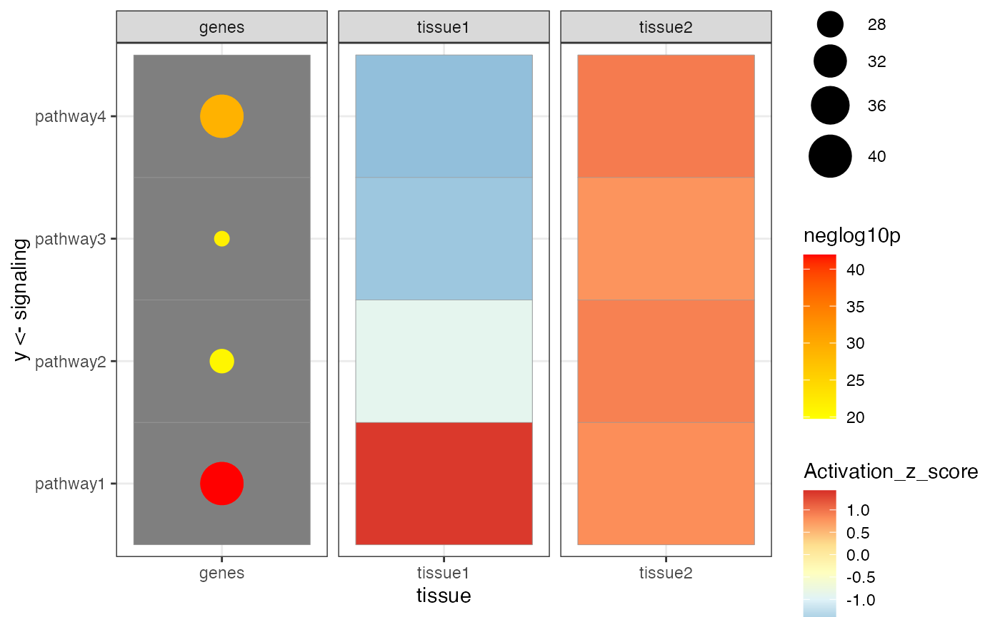

This vignette demonstrates how to use the
MultifeatureGrid class from the
MultiModalGraphics package to create comprehensive heatmaps
integrating various data features such as z-scores, p-values, and
counts.
First, we create a sample dataset representing biological data across different tissues and signaling pathways, with associated p-values and activation z-scores.
data <- get_multifeature_grid_df()We initialize the MultifeatureGrid object with the data
prepared above.
mg <- MultifeatureGrid(data)We then plot the heatmap, specifying ‘tissue’ as the independent variable for faceting.
plot_heatmap(mg, independantVariable = "tissue")
#> Warning: Removed 32 rows containing missing values or values outside the scale range
#> (`geom_point()`).
This plot provides a visual summary of the signaling activity and the statistical significance across different tissues, utilizing a color gradient to represent activation z-scores and the size of points to indicate the number of genes involved.
#> R version 4.4.0 (2024-04-24)
#> Platform: x86_64-apple-darwin20
#> Running under: macOS Ventura 13.6.7
#>
#> Matrix products: default
#> BLAS: /Library/Frameworks/R.framework/Versions/4.4-x86_64/Resources/lib/libRblas.0.dylib
#> LAPACK: /Library/Frameworks/R.framework/Versions/4.4-x86_64/Resources/lib/libRlapack.dylib; LAPACK version 3.12.0
#>
#> locale:
#> [1] en_US.UTF-8/en_US.UTF-8/en_US.UTF-8/C/en_US.UTF-8/en_US.UTF-8
#>
#> time zone: America/New_York
#> tzcode source: internal
#>
#> attached base packages:
#> [1] stats graphics grDevices utils datasets methods base
#>
#> other attached packages:
#> [1] MultiModalGraphics_0.99.0
#>
#> loaded via a namespace (and not attached):
#> [1] sass_0.4.9 utf8_1.2.4 generics_0.1.3
#> [4] shape_1.4.6.1 digest_0.6.36 magrittr_2.0.3
#> [7] evaluate_0.24.0 grid_4.4.0 RColorBrewer_1.1-3
#> [10] iterators_1.0.14 circlize_0.4.16 fastmap_1.2.0
#> [13] foreach_1.5.2 doParallel_1.0.17 jsonlite_1.8.8
#> [16] GlobalOptions_0.1.2 ComplexHeatmap_2.20.0 fansi_1.0.6
#> [19] scales_1.3.0 codetools_0.2-20 textshaping_0.4.0
#> [22] jquerylib_0.1.4 cli_3.6.3 rlang_1.1.4
#> [25] crayon_1.5.3 munsell_0.5.1 withr_3.0.0
#> [28] cachem_1.1.0 yaml_2.3.10 tools_4.4.0
#> [31] parallel_4.4.0 dplyr_1.1.4 ggplot2_3.5.1
#> [34] colorspace_2.1-1 GetoptLong_1.0.5 BiocGenerics_0.50.0
#> [37] vctrs_0.6.5 R6_2.5.1 png_0.1-8
#> [40] matrixStats_1.3.0 stats4_4.4.0 lifecycle_1.0.4
#> [43] S4Vectors_0.42.1 fs_1.6.4 htmlwidgets_1.6.4
#> [46] IRanges_2.38.1 clue_0.3-65 ragg_1.3.2
#> [49] cluster_2.1.6 pkgconfig_2.0.3 desc_1.4.3
#> [52] gtable_0.3.5 pkgdown_2.1.0 bslib_0.7.0
#> [55] pillar_1.9.0 glue_1.7.0 systemfonts_1.1.0
#> [58] highr_0.11 tidyselect_1.2.1 xfun_0.46
#> [61] tibble_3.2.1 rstudioapi_0.16.0 knitr_1.48
#> [64] farver_2.1.2 rjson_0.2.21 htmltools_0.5.8.1
#> [67] labeling_0.4.3 rmarkdown_2.27 compiler_4.4.0